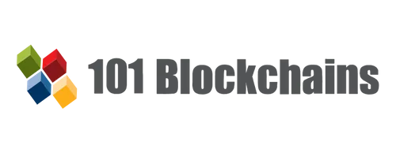
Kursus Enterprise Blockchains Fundamentals adalah program online yang dirancang untuk membantu peserta memahami teknologi Blockchain serta penerapannya di berbagai industri. Dalam kursus ini, peserta akan mempelajari konsep dasar Blockchain, termasuk definisinya, cara kerjanya, serta berbagai istilah yang sering digunakan. Selain itu, kursus ini juga membahas dasar-dasar smart contract, bagaimana Blockchain mendorong transformasi digital, sembilan sektor yang mengalami perubahan signifikan berkat teknologi ini, serta perbandingannya dengan database tradisional.
Kursus ini tersedia secara gratis dan dapat diakses melalui tautan berikut: 101 Blockchains - Free Blockchain Course.
Tujuan Materi Kursus:
- Mempelajari cara kerja Blockchain.
- Familiar dengan definisi Blockchain.
- Memahami apa yang membuat Smart Contract begitu “smart”.
- Mempelajari bagaimana membangun karir enterprise Blockchain.
Materi yang dipelajari:
- Lesson 1: What exactly is Blockchain Technology.
- Lesson 2: Must know ( Enterprise ) Blockchain Terms.
- Lesson 3: Smart Contract Basics.
- Lesson 4: Blockchain Digital Transformation.
Lesson 1: What exactly is Blockchain Technology
Pada pelajaran pertama, peserta akan mempelajari konsep dasar Blockchain. Blockchain adalah jenis database khusus yang menyimpan data dalam bentuk blok yang saling terhubung melalui kriptografi. Data yang tersimpan di dalamnya bersifat immutable (tidak dapat diubah atau dihapus). Teknologi ini memungkinkan transaksi peer-to-peer (P2P) tanpa memerlukan pihak ketiga atau otoritas pusat.
Ilustrasi Blockchain:
- Seorang pemasok mengirimkan tagihan kepada klien untuk diproses.
- Biasanya, transaksi ini memerlukan perantara, seperti kantor pos.
- Dalam sistem Blockchain, "kurir" bersaing untuk mengantarkan surat dan mencatat transaksi dalam ledger terdesentralisasi.
- Setiap transaksi diverifikasi oleh seluruh jaringan, memastikan keamanan dan transparansi.
Lesson 2: Must know ( Enterprise ) Blockchain Terms
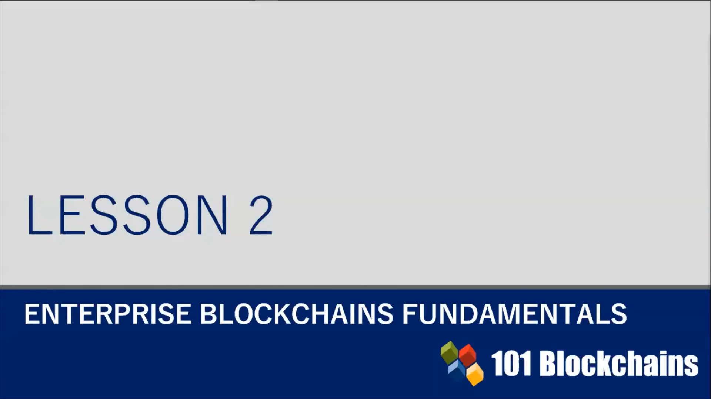
Pada pelajaran kedua, peserta akan dikenalkan dengan berbagai istilah penting dalam Blockchain (Enterprise) yang perlu diketahui. Materi ini mencakup konsep dasar seperti mekanisme konsensus, transaksi valid, double-spending, miners/validator, cryptocurrency, token, serta perbedaan antara Permissionless Blockchain dan Permissioned Blockchain. Selain itu, peserta juga akan mempelajari tentang Smart Contract dan bagaimana teknologi ini bekerja dalam ekosistem Blockchain.
Istilah Penting dalam Blockchain:
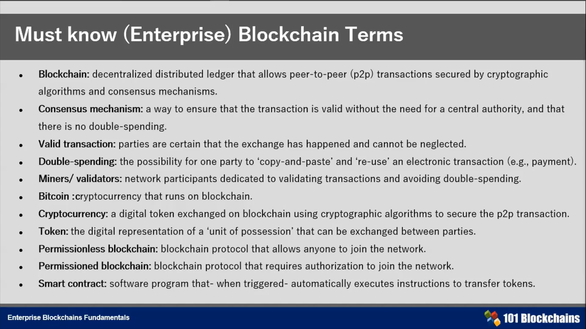
- Blockchain: Buku besar (ledger) terdistribusi yang terdesentralisasi, memungkinkan transaksi peer-to-peer (P2P) yang diamankan oleh algoritma kriptografi dan mekanisme konsensus.
- Mekanisme Konsensus: Cara untuk memastikan bahwa transaksi valid tanpa memerlukan otoritas pusat serta mencegah double-spending.
- Transaksi Valid: Pihak-pihak yang terlibat yakin bahwa transaksi telah terjadi dan tidak dapat diabaikan.
- Double-Spending: Kemungkinan seseorang menyalin dan menggunakan kembali transaksi elektronik yang sama (misalnya, pembayaran).
- Penambang/Validator: Peserta jaringan yang bertugas memvalidasi transaksi dan mencegah double-spending.
- Bitcoin: Mata uang kripto yang berjalan di atas teknologi Blockchain.
- Cryptocurrency: Token digital yang dipertukarkan di dalam Blockchain menggunakan algoritma kriptografi untuk mengamankan transaksi P2P.
- Token: Representasi digital dari suatu aset atau unit kepemilikan yang dapat diperdagangkan antara pihak-pihak dalam jaringan.
- Permissionless Blockchain: Protokol Blockchain yang memungkinkan siapa saja untuk bergabung dalam jaringan.
- Permissioned Blockchain: Protokol Blockchain yang memerlukan otorisasi untuk bergabung dalam jaringan.
- Smart Contract: Program perangkat lunak yang akan secara otomatis mengeksekusi instruksi untuk mentransfer token ketika kondisi tertentu terpenuhi.
Lesson 3: Smart Contract Basics
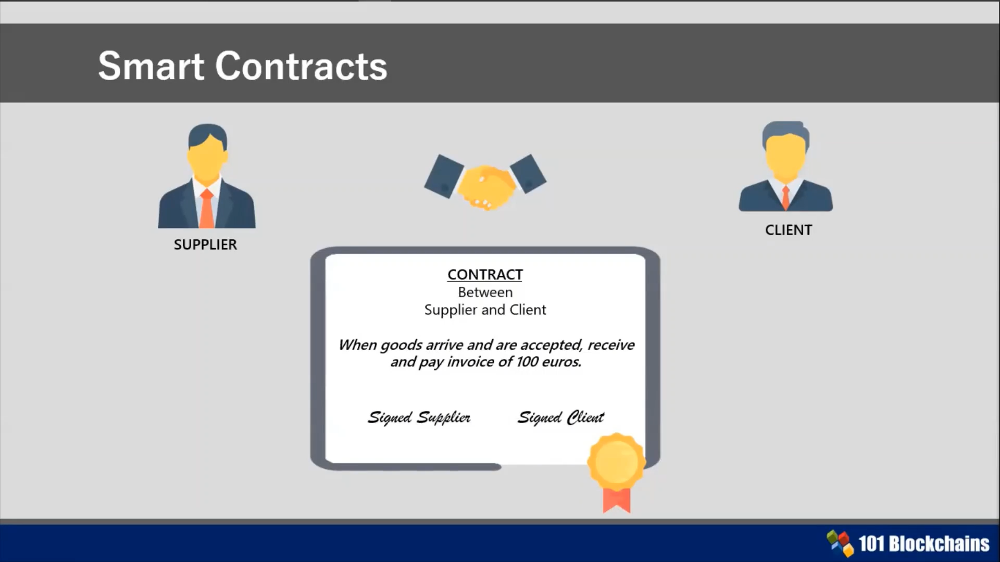
Pada pelajaran ketiga, peserta akan mempelajari smart contract. Smart contract adalah program yang berjalan secara otomatis di blockchain dan berfungsi untuk mengotomatisasi perjanjian antara dua pihak tanpa memerlukan perantara. Smart contract dikembangkan menggunakan bahasa pemrograman seperti Solidity untuk jaringan Ethereum.
Contoh Penggunaan Smart Contract:
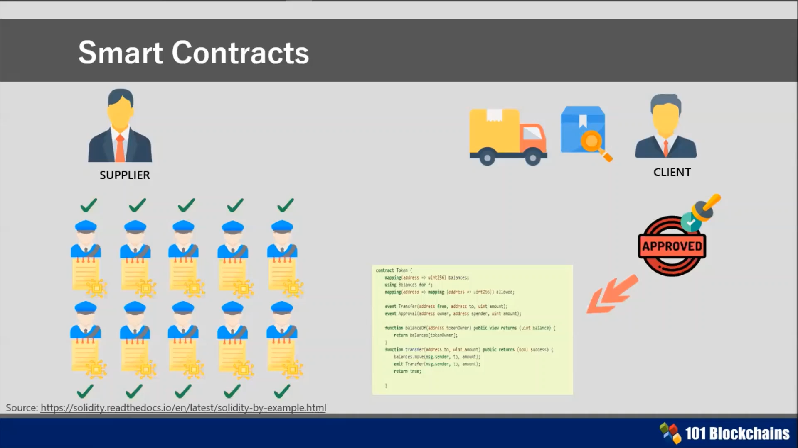
- Kontrak Tradisional: Setelah barang dikirim, pemasok harus menunggu pembayaran dilakukan secara manual oleh klien.
- Smart Contract: Jika sistem mendeteksi bahwa barang telah diterima oleh klien, pembayaran akan diproses secara otomatis tanpa perlu konfirmasi manual.
Lesson 4: Blockchain Digital Transformation
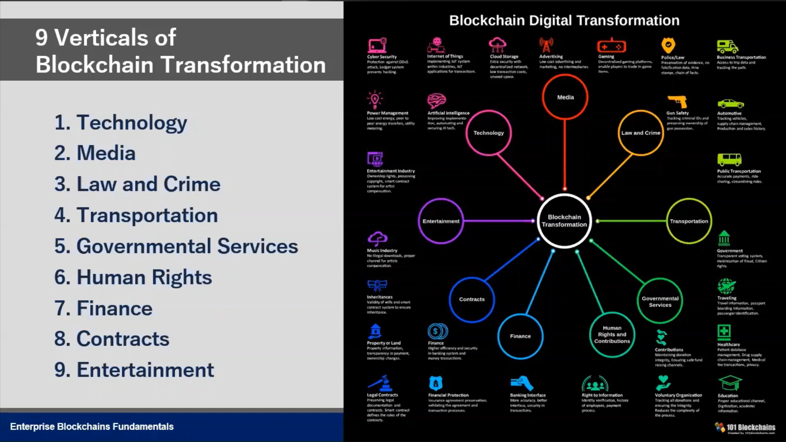
Teknologi blockchain telah digunakan di berbagai sektor untuk meningkatkan efisiensi dan keamanan, antara lain:
- Teknologi – Penyimpanan data terdesentralisasi dan perlindungan terhadap serangan siber.
- Media – Perlindungan hak cipta digital dan distribusi konten berbasis blockchain.
- Hukum & Kejahatan – Pencatatan bukti digital yang tidak dapat diubah.
- Transportasi – Sistem pelacakan logistik dan pengiriman barang secara transparan.
- Pemerintahan – Identitas digital serta sistem pemungutan suara berbasis blockchain.
- Hak Asasi Manusia – Transparansi dalam distribusi donasi dan bantuan kemanusiaan.
- Keuangan – Transfer dana lintas negara yang lebih cepat dan biaya lebih rendah.
- Kontrak – Digitalisasi kontrak menggunakan teknologi smart contract.
- Hiburan – Monetisasi konten serta perlindungan hak cipta bagi kreator.
Sektor yang Paling Banyak Mengadopsi Blockchain
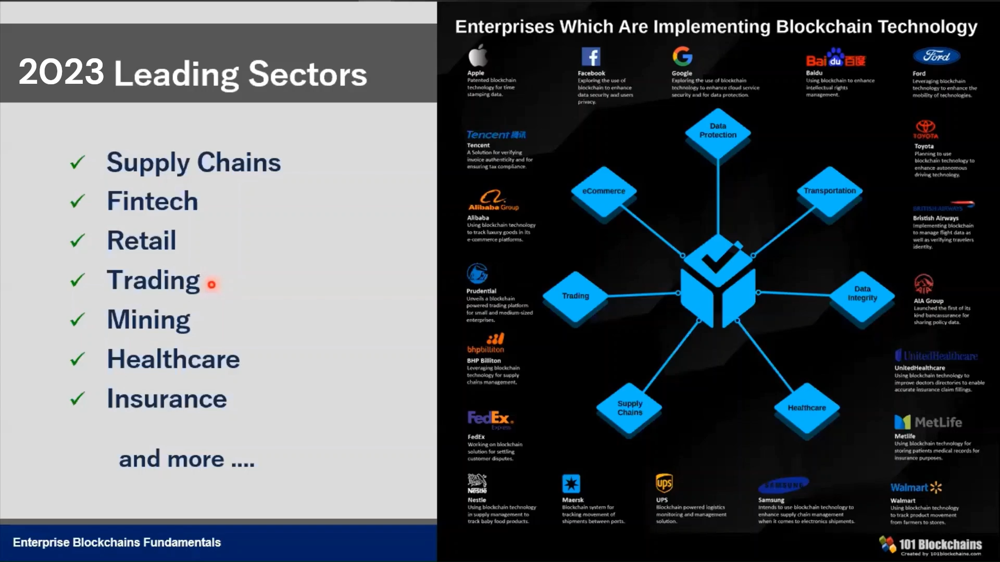
Beberapa sektor yang telah mengadopsi teknologi blockchain dengan signifikan:
- Rantai Pasokan (Supply Chain) – Pelacakan asal produk dan verifikasi keasliannya.
- Teknologi Finansial (Fintech) – Inovasi dalam sistem pembayaran dan pinjaman berbasis blockchain.
- Retail – Program loyalitas pelanggan yang berbasis token digital.
- Perdagangan Internasional – Otomatisasi transaksi perdagangan global melalui smart contracts.
- Kesehatan – Penyimpanan rekam medis pasien yang aman dan terenkripsi.
- Asuransi – Proses klaim otomatis menggunakan smart contract untuk meningkatkan efisiensi.
Bonus #1: Blockchain vs Database
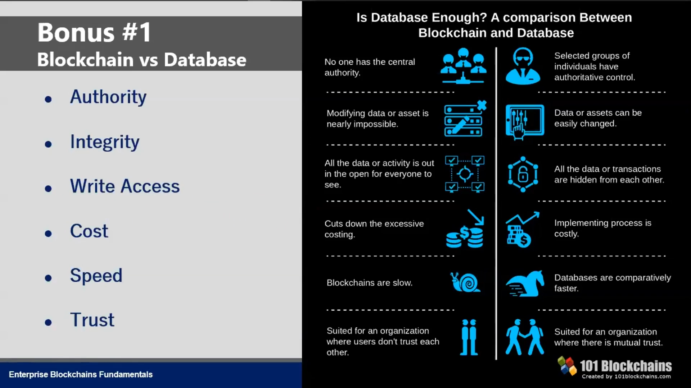
Blockchain memiliki beberapa perbedaan mendasar dengan sistem database tradisional:
- Otoritas: Blockchain tidak memiliki otoritas pusat, sementara database tradisional dikelola oleh satu entitas.
- Integritas: Data yang telah dicatat di blockchain tidak dapat diubah, sedangkan database tradisional bisa dimodifikasi.
- Kepercayaan: Blockchain memastikan transparansi tinggi tanpa memerlukan perantara atau otoritas pusat.
Bonus #2: Enterprise Blockchain
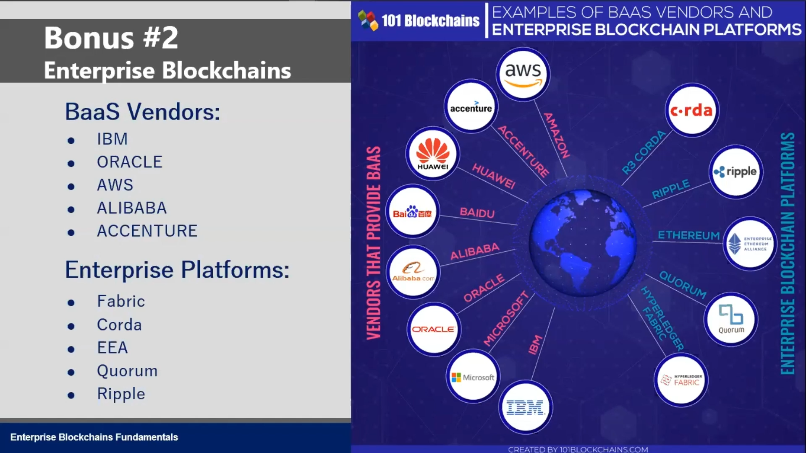
Platform Enterprise Blockchain
Beberapa penyedia layanan Blockchain-as-a-Service (BaaS) dan platform enterprise blockchain yang populer:
- Penyedia BaaS: IBM, Oracle, AWS, Alibaba, Accenture.
- Platform Enterprise Blockchain: Hyperledger Fabric, Corda, Ethereum Enterprise Alliance (EEA), Quorum, Ripple.
Screenshot Kursus
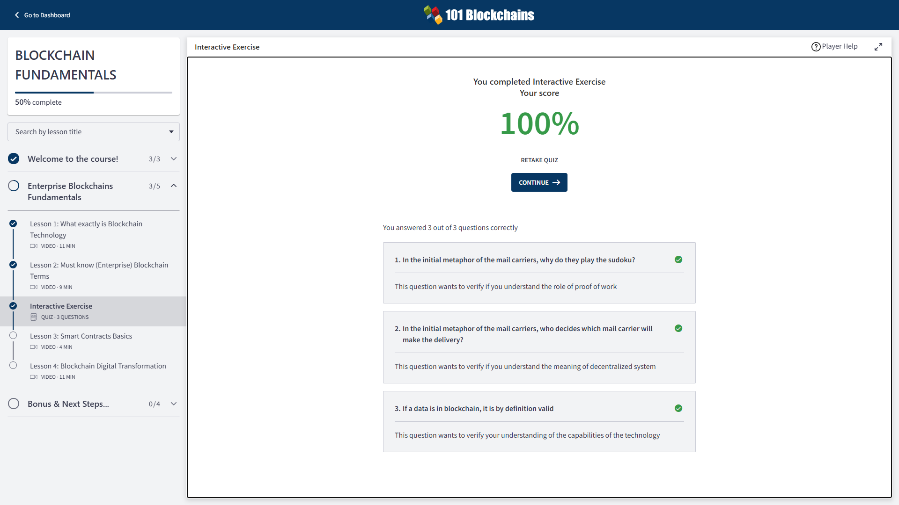
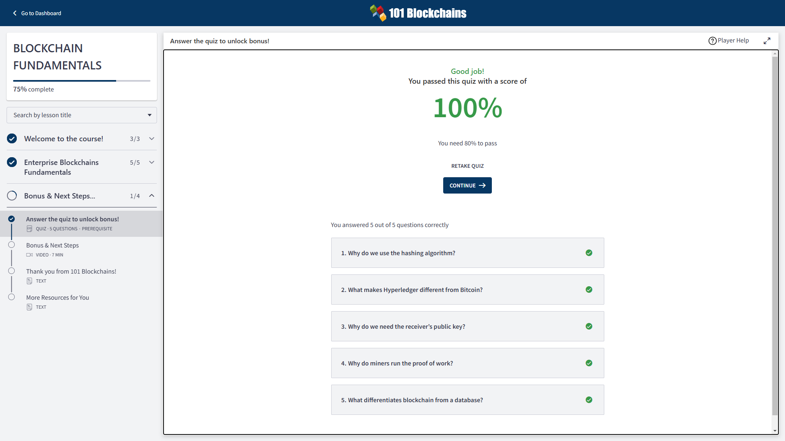
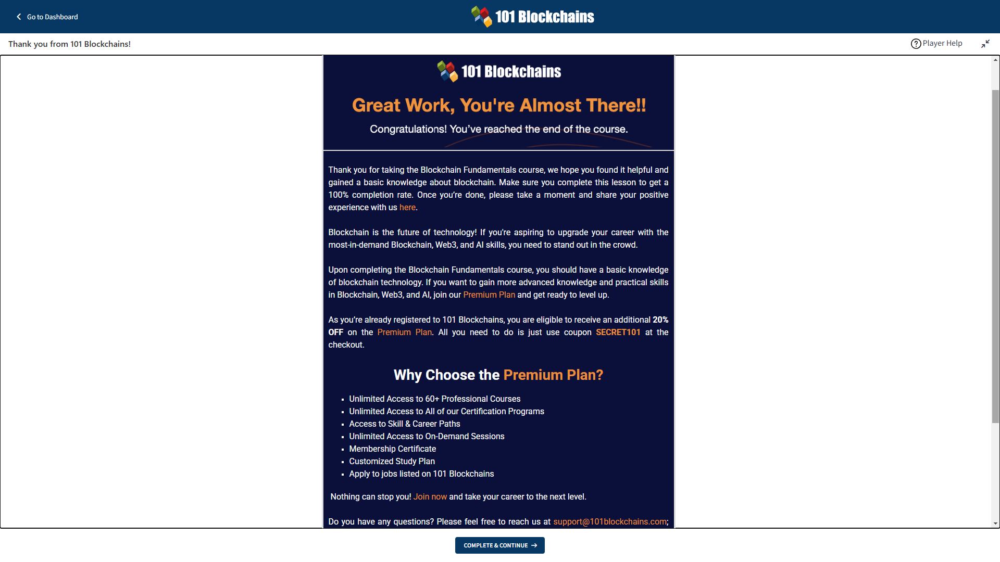
Kesimpulan
Teknologi Blockchain merupakan inovasi yang memungkinkan pencatatan data secara terdesentralisasi, aman, dan transparan. Dalam kursus ini, telah dibahas berbagai aspek fundamental blockchain, mulai dari cara kerja, istilah-istilah penting, smart contracts, hingga penerapannya di berbagai industri.
Blockchain adalah sistem pencatatan berbasis blok yang terhubung secara kriptografis, di mana data yang tersimpan bersifat immutable atau tidak dapat diubah. Teknologi ini memungkinkan transaksi peer-to-peer (P2P) tanpa memerlukan perantara, sehingga meningkatkan efisiensi dan keamanan. Salah satu keunggulan utama blockchain adalah kemampuannya dalam mencegah double-spending, yaitu upaya penggunaan kembali unit mata uang digital yang sama dalam lebih dari satu transaksi.
Dalam dunia blockchain, terdapat beberapa konsep utama yang perlu dipahami, seperti mekanisme konsensus, yang memastikan setiap transaksi divalidasi oleh jaringan tanpa perlu otoritas pusat. Selain itu, istilah lain seperti miners/validators, cryptocurrency, token, serta perbedaan antara permissionless blockchain dan permissioned blockchain juga menjadi dasar penting dalam memahami cara kerja teknologi ini.
Salah satu inovasi terbesar dalam blockchain adalah smart contracts, yaitu program yang dieksekusi secara otomatis ketika syarat tertentu terpenuhi. Dengan adanya smart contracts, transaksi dapat berjalan tanpa memerlukan pihak ketiga, seperti dalam sistem pembayaran otomatis setelah barang diterima oleh pembeli.
Blockchain kini telah banyak diterapkan di berbagai industri, termasuk keuangan, logistik, kesehatan, asuransi, hiburan, dan pemerintahan. Teknologi ini digunakan untuk identitas digital, pelacakan produk, perlindungan hak cipta, hingga sistem pembayaran global. Dalam industri keuangan, blockchain memungkinkan transfer uang lintas negara yang lebih murah dan cepat, sementara di sektor logistik, teknologi ini digunakan untuk melacak pergerakan barang secara real-time.
Jika dibandingkan dengan database tradisional, blockchain memiliki beberapa keunggulan utama. Salah satunya adalah tidak adanya otoritas pusat, yang berarti data tidak dikendalikan oleh satu entitas saja. Selain itu, informasi yang telah dicatat dalam blockchain tidak dapat diubah, sehingga meningkatkan transparansi dan keamanan. Dengan sistem yang terdesentralisasi, blockchain juga mengurangi kebutuhan akan perantara, yang sering kali menyebabkan biaya tambahan dalam transaksi.
Saat ini, berbagai perusahaan telah menyediakan layanan Blockchain-as-a-Service (BaaS) serta platform blockchain untuk kebutuhan enterprise. Beberapa contoh penyedia layanan ini adalah IBM, Oracle, AWS, Alibaba, serta platform blockchain seperti Hyperledger Fabric, Corda, dan Ethereum Enterprise Alliance (EEA).
Secara keseluruhan, blockchain bukan hanya sekadar teknologi di balik cryptocurrency, tetapi juga telah menjadi fondasi baru dalam transformasi digital di berbagai industri. Dengan memahami konsep dasar blockchain, smart contracts, dan penerapannya, kita dapat lebih siap menghadapi perubahan teknologi di masa depan.